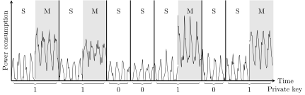
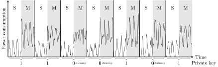

Simple power analysis (SPA) involves visually interpreting power traces, or graphs of electrical activity, over time.

Ciphertext \(c\) (e.g. \(5454\)): demonstrates the encrypted ciphertext by using the secret private key \(d\)(e.g. \(101\)).
\(P\) and \(Q\) are two coprime numbers and the module \(n = P \cdot Q\).
\(R = c^d \; \text{mod} \; n\) is the decrypted plaintext. Square and Multiply algorithm is normally used to execute the exponentiation result of \(c^d \; \text{mod} \; n\). It is an efficient algorithm used for the fast computation of large integer powers of a number. However, it is also vulnerable to Power Analysis.
The "Square and Multiply" algorithm is used to calculate the exponentiation of large numbers in an efficient manner. This is needed in the RSA algorithm in which encryption and decryption takes place by exponantiation of the plain text/cipher text with the public or private key. These exponents are in most cases more than 2000 bit long.
The algorithm is based on the principle of nested exponentiation. For example, \(2^{2^{2^2}}\) is the same as \(2^8\), because the powers get multiplied and \(2 \cdot 2 \cdot 2\) equals \(8\). As this binary exponentiation (a simple duplication each time) grows very quickly (\(2^{30}\) is already greater than a billion) it is possible to process very large exponents within a few 100 rounds.
c - type: integer base of the exponential calculation
power - type: integer exponent or power
n - type: integer divisor for the modulo operation
Operators:
>> - right shift
& - logical and
% - modulo remainder
def unsafe_square_and_multiply(c, power, n):
res = 1
while power > 0: # iterate over the power's bits as long as its not 0
res = (res * res) % n # 'square' step
b = power & 1 # determine the power's lowest bit by a logical and with 1 and power
if b == 1:
res = (res * c) % n # If the bit is a one, do a 'multiply' step
power = power >> 1 # Shift the power one bit to the right, to advance to the next round
return res
This is how it works: the base concept is to iterate over the bits of the exponent (variable power) from the lowest to the highest one. For each step we square a temporary variable res, which is the first part of the algorithms name. Then the bit of the exponent is taken into account: if it is a 0 nothing is done, if it is a 1, the temporary res is multiplied with the base c (multiply step). The next bit is then shifted to the right. This means the current bit is discarded and the next one takes its place. If the number is 0 there are no more bits left and the algorithm is finished.
Note: there are many variants and variations of this algorithm. This one uses bit operations and is written in Python. You can copy it to a Python interpreter and try it out.

Since the presence of the if statement in the algorithm, "Square and Multiply" is vulnerable to "Power Analysis Attack".
The power traces between "squaring and multiplication" and "squaring" are different. "Simple Power Analysis" can recover every bit of the secure private key d through comparison and analysis of the power traces in each turn. As shown in the figure above, the private key is 1100101.
The original "Square and Multiply" algorithm could be improved through adding a dummy multiplication operation in the branch of bit "0".
c - type: integer base of the exponential calculation
power - type: integer exponent or power
n - type: integer divisor for the modulo operation
Operators:
>> - right shift
& - locigal and
% - modulo remainder
def square_and_multiply(c, power, n):
res = 1
while power > 0: # iterate over the power's bits as long as its not 0
res = (res * res) % n # 'square' step
b = power & 1 # determine the power's lowest bit by a logical and with 1 and power
if b == 1:
res = (res * c) % n # If the bit is a one, do a 'multiply' step
else:
tmp = (res * c) % n # If the bit is a zero, do a dummy multiplication and discard its result
power = power >> 1 # Shift the power one bit to the right, to advance to the next round
return res

No matter the current bit is "1" or "0", squaring and multiplication operation will always be carried out.
Obviously, there are no more distinguished difference between the branches of bit "1" and bit "0", so recovering each bit of private key by comparison the power traces using SPA is no more feasible.
For more information on elliptic curve calculations, see the subsection "Simple Power Analysis" in "Power analysis" or http://en.wikipedia.org/wiki/Power_analysis#Simple_Power_Analysis.